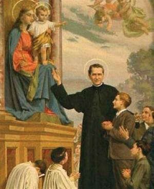
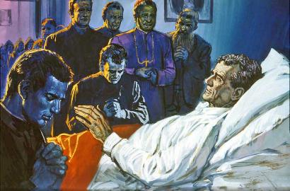
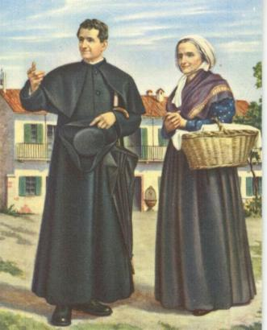
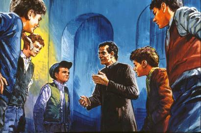
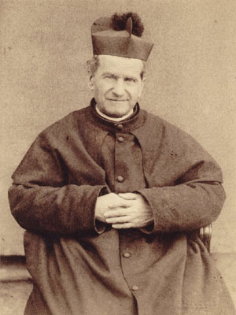
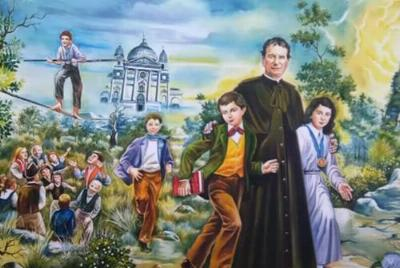

AUXÍLIO DIVINO
SÓ UM MILAGRE PARA SOLUCIONAR O PROBLEMA

Foi com os meninos a NOSSA SENHORA DO CAMPO, celebrou e fez a pregação na Santa Missa, mas não teve animo para se referir a coisas alegres, apenas convidou os rapazes para rezar a NOSSA SENHORA e suplicar a sua maternal proteção, pois na verdade, eles estavam nas Mãos Dela.
Ao cair da tarde, ele contemplava a multidão de meninos que inocentemente brincavam e corriam pelo campo. Estava só. Sentiu-se com poucas forças e com a saúde abalada. Caminhou sozinho e não conseguiu reprimir as lágrimas, chorou a dor daquela imensa tristeza, e olhando para o Céu exclamou:
- “Meu DEUS, dizei-me o que devo fazer!”
Nesse momento aproximou-se um homem gago, Pancrácio Soave, fabricante de soda e detergentes.
- “È verdade que o senhor procura um lugar para fazer um laboratório?”
- “Um laboratório não, um Oratório”. Esclareceu Dom Bosco.
- “Não sei qual é a diferença. Mas o lugar existe. Venha vê-lo. É propriedade do senhor Francisco Pinardi, pessoa muito honesta.”
Era um galpão medindo 15 metros de comprimento por 6 metros de largura, necessitando de diversos serviços, a fim de torná-lo verdadeiramente aproveitável.
Diante da recusa de Dom Bosco, o senhor Pinardi falou:
-“Ajeitarei como quiser, pois faço questão que monte aqui o seu laboratório.”
- “Laboratório não, Oratório, uma pequena Igreja para reunir os meninos”. Disse Padre Bosco.
- “Melhor ainda. Eu sou cantor, virei aqui ajudá-lo, quando necessário”.
Negócio fechado, Padre Bosco voltou correndo para levar a novidade aos seus meninos. O senhor Francisco Pinardi manteve a palavra e fez todas as melhorias necessárias ao local. Dia 12 de Abril de 1846, mudou o Oratório para região chamada Valdocco. Padre João Bosco amava os seus meninos, se preocupava com todos, sem exceções. Era um verdadeiro e carinhoso pai que sempre quis encaminhá-los muito bem através da sua existência, pelo caminho do direito, da justiça e do amor fraterno, a fim de poderem cumprir a missão que DEUS NOSSO SENHOR reservou a cada um deles.
A SAÚDE DECAI VERTICALMENTE
Como todo homem, depois do “stress” manifestado na primavera, com a chegada do calor, a saúde começou a lhe faltar assustadoramente.
A Marquesa Barolo que o estimava muito, mandou chamá-lo no início de Maio. Também estava presente o teólogo Padre Borel. A Marquesa colocou na frente de Dom Bosco uma quantia correspondente a oito anos de salários e disse autoritariamente:
- “O senhor pegue esse dinheiro e vá embora, para onde quiser, contanto que fique em repouso absoluto”.
Padre Bosco respondeu:
- “Eu lhe agradeço. A senhora é muito caridosa. Mas eu não me tornei Padre para cuidar da minha saúde”.
- “Tampouco para se matar. Soube que o senhor expele sangue pela boca. Seus pulmões estão se desfazendo. Quanto tempo acha que vai viver assim?”
E
na verdade Padre Bosco estava muito mal. Tinha uma infiltração de caráter
tuberculoso nos pulmões. Mas de maneira nenhuma queria abandonar o 
No primeiro domingo de Julho de 1846, depois de um dia estafante no Oratório, sob um calor ardente, ao voltar para o quarto do Refúgio, ele desmaiou. Foi transportado para a cama. Estava com uma terrível tosse, inflamação violenta nos pulmões, soltando golfadas de sangue pela boca, um complexo de gravíssimas enfermidades para aquela época. Foi considerado moribundo. Deram-lhe a Unção dos Enfermos, Comungou. A notícia correu veloz e alcançou todos os jovens: “Dom Bosco está morrendo”.
Tentaram visitá-lo. Impossível. Revezaram-se na Igreja em orações, fazendo promessas e toda sorte de sacrifícios, suplicando a VIRGEM MARIA que intercedesse junto a DEUS e conseguisse do SENHOR a cura dele. E assim, depois de muitas e fervorosas súplicas, a Providência Divina fez com que acontecessem as melhoras desejadas.
Numa tarde de domingo no final de Julho, se apoiando numa bengala, Padre Bosco caminhou para o Oratório. Os rapazes ao vê-lo de longe, voaram ao seu encontro. Os mais fortes fizeram uma cadeira de braços e o transportaram até o pátio, enquanto os outros cantavam, louvavam a DEUS pela graça alcançada, sorriam e choravam. Entraram na Capelinha e juntos rezaram e agradeceram a DEUS. No silêncio que em seguida logo se fez, ele só pode dizer algumas palavras:
- “É a vocês que devo a minha vida. Fiquem certos: de agora em diante vou gastá-la toda com vocês”.
Os médicos prescreveram uma longa convalescença, com repouso absoluto. Por isso, Dom Bosco foi para Becchi, para a casa de seu irmão José e junto da sua mãe para se tratar. Mas prometeu aos meninos que um dia ele voltará.
PLANEJANDO A VOLTA
Os
dias passavam e Padre Bosco ficava pensando: Quando voltar a Turim, irá morar nos
cômodos alugados na casa Pinardi. Mas não é conveniente que 
- “Não quer mamãe, ser também a mãe dos meus meninos?” Margarida sorriu e concordou.
Por carta, ele avisou ao Padre Borel da sua decisão, e o amigo, fraternalmente, providenciou a mudança dos objetos e dos poucos móveis dele que estavam no Refúgio, para a casa Pinardi.
Mãe e filho, no dia 3 de Novembro, fizeram a pé, a viagem para Turim. Não tinham dinheiro para contratar animais e nem uma carruagem. Margarida entrou primeiro na sua nova casa: eram três quartinhos vazios, meio sujos, com duas camas. Também tinha duas cadeiras e algumas caçarolas. Sorriu e disse ao filho:
- “Em Becchi, todos os dias era aquela luta para por a casa em ordem, limpar os moveis, lavar as panelas, etc. Aqui vou poder descansar um pouco mais.”
Padre Bosco colocou na parede um crucifico e uma pequena imagem de NOSSA SENHORA, enquanto sua mãe foi preparar algo para eles comerem.
Um garoto, Estevão Castagno, ouviu ele e a mãe cantarem felizes e muito alegres, e logo como um relâmpago, espalhou a notícia para os meninos de Valdocco:
- “Dom Bosco voltou”.
Logo no domingo seguinte, 8 de Novembro, foi um dia de festa. Padre Bosco teve de se assentar numa poltrona no meio do pátio e ouvir os cantos dos meninos e os votos de muita saúde.
Na verdade, muitos daqueles garotos tinham ido a Becchi para visitá-lo e o forçaram antecipar a sua volta:
- “Ou o senhor volta já para Valdocco ou nós mudamos o Oratório para cá”.
Padre Cafasso e o senhor Arcebispo, diante das prescrições médicas, era contra o regresso imediato dele. Mas por fim acabaram aceitando com uma condição que lhe escreveram e ele a relembra:
- “Firmaram a imposição de que eu não fizesse nenhuma pregação durante os próximos dois anos. Mas confesso, eu desobedeci”.
E assim, aos poucos ele recobrou totalmente a sua saúde.
O PROBLEMA DOS COLABORADORES
Dom Bosco continuou com o seu trabalho caridoso e fraterno com todos os jovens. Os meninos se afeiçoavam tanto a ele e ao Oratório, que nunca mais se afastavam, confessando e comungando todos os domingos.
Acontece que com o aumento crescente do número de jovens, era impossível ele sozinho atender a todos, em face de seus múltiplos afazeres. Aos domingos, Padre Borel, Padre Carpano e os demais Sacerdotes que o ajudava, também tinham com frequência as suas próprias incumbências em outros lugares. Então, onde achar pessoas para a assistência, o catecismo e especialmente para as aulas noturnas?
Ele se lembrou do seu sonho da infância: “alguns cordeiros se transformavam em pastores”. Assim, começou a buscar auxiliares entre os próprios rapazes. Começou a fabricá-los, escolhendo entre os maiores e mais vivos, os melhores, que por certo, se adaptaram facialmente as novas funções. E assim preparava-os convenientemente, inclusive com muitas aulas particulares, instruindo-os devidamente.
Aqueles pequenos professores, oito a dez no começo, não só tiveram uma ótima experiência, como também, alguns deles se tornaram na continuidade, excelentes sacerdotes.
APESAR DAS DIFICULDADES A OBRA SEGUIU SE EXPANDINDO
Alugou mais quartos na Casa Pinardi e recebeu os meninos órfãos, sem pai e
muitos sem mãe, que perambulavam pelas ruas, ou que tinham perdido o 
Em Maio de 1847, ele fundou entre os jovens que frequentavam o Oratório, a “Companhia de São Luís”. Quem nela entrasse, assumia três compromissos: dar o bom exemplo, evitar as más conversas, frequentar os sacramentos, com o objetivo claro e específico de torná-los pessoas de bem.
Em final de 1847, calcula-se que os jovens que frequentavam o Oratório, já eram em número de oitocentos. Havia muitos rapazes que vinham de Bairros distantes! Padre Bosco, Padre Borel e Padre Carpano decidiram analisar o fato. E concluíram que era necessário abrir um segundo Oratório na parte sul da cidade.
Então, ele pediu autorização ao senhor Arcebispo e alugou uma casinha da senhora Vaglienti, onde hoje passa a Avenida Corso Vittorio, em Turim. Naquela época, a área era ocupada por casinhas pobres de lavadeiras que estendiam nos varais para secar ao sol os lençóis e colchas coloridas, que tremulavam como bandeiras, enquanto os moleques da região brincavam nas proximidades simulando uma guerra.
Depois ele deu a notícia aos seus meninos:
- “Meus amigos, quando as abelhas numa colméia aumentam demais, uma parte emigra, vai viver em outro lugar. Iremos imitá-las. Abriremos um segundo Oratório, nós faremos uma segunda família. Aqueles que moram na zona sul da cidade, não precisarão mais se deslocar tanto. A partir da festa da IMACULADA no dia 8 de Dezembro, poderão se reunir no “Oratório São Luís”, em Porta Nuova, perto da Ponte de Ferro.”
Padre Borel benzeu o novo Oratório e Padre Carpano ficou como diretor naquele rígido inverno. Todos os dias ia a pé, transportando um feixe de lenha debaixo da capa para acender um fogo maravilhoso na sacristia e se aquecer na companhia dos primeiros meninos.
A INCÔMODA GUERRA
A guerra não só é incomoda como traz prejuízos para as partes envolvidas. De alguns anos passados já existia um estado bélico entre a poderosa Áustria contra a Itália, esta representada pelas forças e o poder de seus nobres. Com a eleição do novo Papa Pio IX, acreditava-se numa tomada de posição militar de Sua Santidade, o que não ocorreu pelas próprias razões que o Sumo Pontífice prega e cultiva a paz e não a guerra. Acontece, porém, que o exército austríaco já tinha se apoderado da Alexandria e ameaçava as outras cidades: como Roma, Milão, Nápoles, Turim, por exemplo, e por essa razão o povo estava exaltado, existindo pessoas que eram favoráveis a um lado e ao outro, e outras, pregando o estabelecimento da Republica, enquanto uma maioria deseja a paz. Mas o preço da paz fixada pelos austríacos era elevado e constrangedor. E por isso mesmo, sem acordo, a guerra continuava.
Embora Dom Bosco e seu Oratório com os colaboradores estivessem pela própria vontade, distantes dos conflitos e de todos os acontecimentos, foram, de certo modo, envolvidos pelos mais exaltados e aqueles que detestavam a Igreja. Certo dia, enquanto ele ministrava o catecismo, na área do Oratório, um bando de exaltados do lado de fora da cerca fazia provocações e todos os tipos de ameaças, inclusive atirando contra eles. Até que a polícia chegou, balas e estilhaços feriram diversos meninos e inclusive um projétil atravessou a batina do Padre Bosco fazendo um apreciável buraco.
ARRUACEIROS QUEREM INTERFERIR

Este Bairro Vanchiglia sempre foi problemático, porque era frequentado por arruaceiros e marginalizados que instigavam e provocavam os meninos, criando violentos confrontos entre os jovens. Por esse motivo, em auxílio do Padre Carpano, Dom Bosco enviou o militar José Brósio, que chefiava um belicoso batalhão para manter a ordem.
Num dia de festa, chegaram quarenta arruaceiros armados de pedras, bastões e facas, querendo invadir o pátio do Oratório. O Padre Carpano tremeu com receio de graves consequências. O militar José Brósio, vendo que eles estavam decididos a usar violência, fechou o portão da entrada, reuniu os meninos maiores e distribuiu fuzis de madeira e deu a ordem: “Aguardem o meu sinal. Se os malandros atacarem, nos iremos agir todos juntos, vamos cair em cima deles”.
Mas neste momento chegou a policia montada com as espadas desembainhadas, porque tinha sido avisada da tentativa de invasão pelos moleques arruaceiros. E assim, desta vez tudo acabou bem.
NOTÍCIA TRISTE
O ano de 1849, além dos transtornos causados pela guerra com a Áustria, Dom Bosco recebeu uma triste notícia familiar. No dia 18 de Janeiro, o seu irmão Antonio faleceu inesperadamente, com apenas 41 anos de idade. Nos últimos anos, ia com frequência ao Oratório para vê-lo e visitar a mãe. Comentava sobre as fracas colheitas e os pesados impostos que o Governo impunha aos camponeses para financiar a guerra. Trazia noticias dos sete filhos que DEUS lhe dera, acrescentando que o penúltimo, Nicolau, nasceu doentinho e faleceu com poucas horas de vida. Os demais estavam com saúde e boa disposição.
Na verdade, os anos e a experiência de vida reaproximaram os dois irmãos Antonio e João. Aquele tempo de gelo e de brigas que aconteceu entre eles, estava bastante distante, e tão longe, que se perdeu no esquecimento.
MILAGRES ACONTECIDOS
O Militar José Brósio, que era amigo de Dom Bosco e acompanhava as suas atividades, enviou uma carta ao Padre Bonetti descrevendo o seguinte fato. No final do ano 1849, estava no escritório de Dom Bosco e apareceu um homem dizendo que tinha cinco filhos e não tinha comido nada naquele dia, por isso vinha lhe pedir uma esmola. Dom Bosco revirou os bolsos e lhe deu as moedas que achou. O homem agradeceu e saiu. Dom Bosco lamentou não ter mais dinheiro para servir aquele homem. Então perguntei:
- “Como o senhor sabe se ele disse a verdade? E se fosse um caloteiro?”
- “É sincero e leal. Digo mais: é trabalhador e muito afeiçoado a família”.
- “E como sabe?”
- “Li no coração dele”.
- “Ah! Então o senhor lê também os meus pecados?”
- “Sim. Sinto o cheiro de todos eles”. Respondeu sorrindo.
Ele lia realmente o coração. Por exemplo, durante a Confissão, se eu me esquecia de alguma coisa, ele me corrigia e recordava o fato de maneira exata. Um dia pratiquei uma obra de caridade que me custou um grande sacrifício e não deixei ao conhecimento de ninguém. Fui ao Oratório e Dom Bosco apenas me viu, me tomou pela mão e disse:
- “Que linda coisa você preparou para o Céu!”
- “Que foi que eu fiz?”
Contou-me nos mínimos detalhes tudo o que eu tinha feito.
Algum tempo depois, andando por Turim, me encontrei com o homem a quem Dom Bosco tinha dado as moedas. Reconheceu-me, fez-me parar e disse que, com aquele dinheiro tinha comprado farinha de milho, fizera polenta e ele e toda a família tinham comido até fartar.
E repetia:
- “Lá em casa, o chamamos de Padre do milagre da polenta. É que, com aquelas poucas moedas, a farinha comprada não daria nem para duas pessoas. Entretanto deu para satisfazer sete pessoas e ainda sobrou polenta!”
PRIMEIRO E SEGUNDO QUARTETO
Dia 2 de Fevereiro de 1851, após 14 meses de estudos intensivos, os quatro primeiros rapazes do Oratório de Dom Bosco, conseguem passar com brilhantismo no exame perante a Cúria de Turim. Buzzetti, Gastini, Bellia e Reviglio recebem a batina no Oratório. Dom Bosco está radiante. Mas infelizmente, dos quatro que no dia seguinte começaram as aulas de filosofia, somente Bellia e Reviglio chegarão ao sacerdócio. Gastini logo desanimará e abandonará os estudos. Buzzetti ficará com Dom Bosco no Oratório, mas não como Padre.
Já nesta época, Dom Bosco preparava o segundo quarteto que ele pretendia levar ao sacerdócio: Miguel Rua, Ângelo Sávio, João Batista Francesia e Anfossi. Eles já ajudavam nos Oratórios, dando catecismo aos meninos.
PENSANDO NA CASA

Enquanto Padre Borel foi pregar o Evangelho, ele foi se encontrar com o senhor Francisco Pinardi:
- “Se me fizer um preço justo e honesto, compro toda a sua casa”.
Pinardi falou: - “Farei! Quanto me dá por tudo?”
- “Mandei avaliá-la por uma pessoa de bem, o engenheiro Spezia. Disse-me, como ela está, vale de 26 a 28 mil liras. Dou-lhe 30 mil liras”. Disse Dom Bosco.
- “Em dinheiro e a vista, negócio fechado. Aperta cá a mão”.
Dom Bosco apertou a mão de Pinardi, mas ficou meio no ar, sem muita coragem, pois 30 mil liras naquela época valem hoje cerca de 50 milhões, ou mais. Onde achar todo esse dinheiro?
Nas suas “Memórias” ele escreveu com simplicidade:
“A Divina Providência elegantemente não se fez esperar. Naquela tarde, Padre Cafasso veio me visitar e me disse que uma pessoa piedosa, a Condessa Casazza-Riccardi, o encarregara de me dar 10 mil liras para serem empregadas no que eu julgasse para a maior glória de DEUS.”
“No dia seguinte, chegou um "Religioso Rosminiano", que me trouxe por empréstimo 30 mil liras. (O empréstimo era com juros de 4% ao mês. Mas depois disso, o Abade nunca mais me falou em reaver nem os juros e nem o capital).”
“As 3 mil liras de despesas acessórias para escritura e documentos, foram fornecidas pelo senhor Cotta, em cujo Banco foi passada a suspirada escritura de compra do imóvel.”
Era o dia 19 de Fevereiro de 1851. Difícil não se enxergar aí a mão da Providência Divina. Mais difícil ainda, para Dom Bosco, era não seguir em frente pela mesma estrada.
MIGUELZINHO E JOÃO CAGLIERO
No dia 1º de Novembro de 1851, Dom Bosco chegou a Castelnuovo d’Asti, a sua terra natal, para celebrar a Santa Missa e fazer o sermão de Finados. Entre os coroinhas está um rapazinho que o acompanhou até o púlpito e ficou olhando fixamente para ele. Terminada a Missa, Dom Bosco chamou-o e perguntou:
- “Você quer me dizer alguma coisa, não é verdade?”
- “Sim, senhor. Quero ir para Turim com o senhor para estudar e ser Padre.”
E de fato isto aconteceu. Com a permissão da mãe do menino, Dona Teresa, ele seguiu com Dom Bosco para Turim. João Cagliero era o seu nome. Ele e Miguel Rua tornaram-se duas colunas sólidas da Congregação Salesiana. João foi o primeiro Bispo e Cardeal Salesiano. Rua o Padre inseparável e sucessor de Dom Bosco na Congregação Salesiana.
DEUS MANDOU UM CÃO
Quiseram matá-lo em várias oportunidades. Isto, naturalmente o obrigou a andar prevenido, principalmente quando convidado a dar uma assistência religiosa. Em muitos casos tratava-se de um ardil.
A distância entre a cidade de Turim e o Oratório era um bom pedaço de caminhada a pé. Certa noite escura, embora com um pouco de medo, voltava sozinho para casa, quando surgiu um cão imenso, quase do tamanho de um bezerro, que tinha um focinho comprido, como se fosse um lobo e que a primeira vista o assustou. Mas se aproximou festivo, como se ele fosse o dono, de modo que o deixou tranquilo e também, logo começou a acariciar o animal, dando-lhe as boas vindas. E assim caminharam juntos até o Oratório. E isto aconteceu diversas vezes. Aquele cão, que foi batizado com o nome de Grigio, tinha prazer de acompanhar Dom Bosco naquele trecho escuro da caminhada até o Oratório.
Em fins de Novembro de 1854, numa noite chuvosa e nevoenta, quando voltava sozinho das prisões de Turim, onde deu assistência aos jovens necessitados, sentiu que estava sendo seguido por dois homens. Acelerou os passos, mas, percebeu que também eles aceleraram para manterem uma pequena distância que os separava. Dom Bosco pressentiu que eles iam agarrá-lo, quando nesse exato momento surgiu Grigio que de imediato, latindo, lançou-se com as patas na cara de um deles arremessando-o ao solo e logo a seguir, com a boca escancarada partiu para cima do outro. Eles vendo a coisa feia, gritaram:
- “Chame o cão! Chame o cão!”
Dom Bosco respondeu:
- “Só chamo se me deixarem em paz”.
- “Chame logo”.
O cão mordeu os dois e rasgou a roupa de ambos, que logo na primeira chance, fugiram em desabalada carreira, enquanto Grigio permaneceu ao lado de Dom Bosco.
AS PRECIOSAS OFICINAS
No Outono de 1853, com o objetivo de instruir e dar uma profissão aos meninos, Dom Bosco iniciou a “Oficina de Sapataria” e a “Oficina de Alfaiataria” . O primeiro mestre foi o próprio Dom Bosco, que se sentou a banca e martelou uma sola, na frente de quatro meninos. Depois lhes ensinou a manejar a sovela e o barbante encerado. Poucos dias depois cedeu o seu lugar a Domingos Goffi, que era perito na profissão. Na Alfaiataria, também os primeiros mestres foram Dom Bosco e Dona Margarida, a mãe dele, que ensinaram os meninos a cortar e a costurar, como aprenderam em Castelnuovo, com o alfaiate João Roberto.
Nos primeiros meses de 1854, abriu a Terceira Oficina: “de Encardenação” , e como sempre, ele e sua Mãe são os primeiros professores.
No fim de 1856, dá inicio a “Oficina de Marcenaria” que é a quarta Oficina, e o primeiro mestre é o senhor Corio, que já era um profissional tarimbado em Turim, e apto a ensinar aos meninos.
A Quinta Oficina, na verdade, a mais desejada, foi a “Tipografia”. Dom Bosco teve que insistir durante quase um ano, para a Prefeitura lhe conceder a autorização, que finalmente, depois de muitos aborrecimentos, foi liberada no dia 31 de Dezembro de 1861. E assim, em 1862, Dom Bosco abriu a “Sexta Oficina: a Serralheria”, precursora das atuais Oficinas de Mecânica.